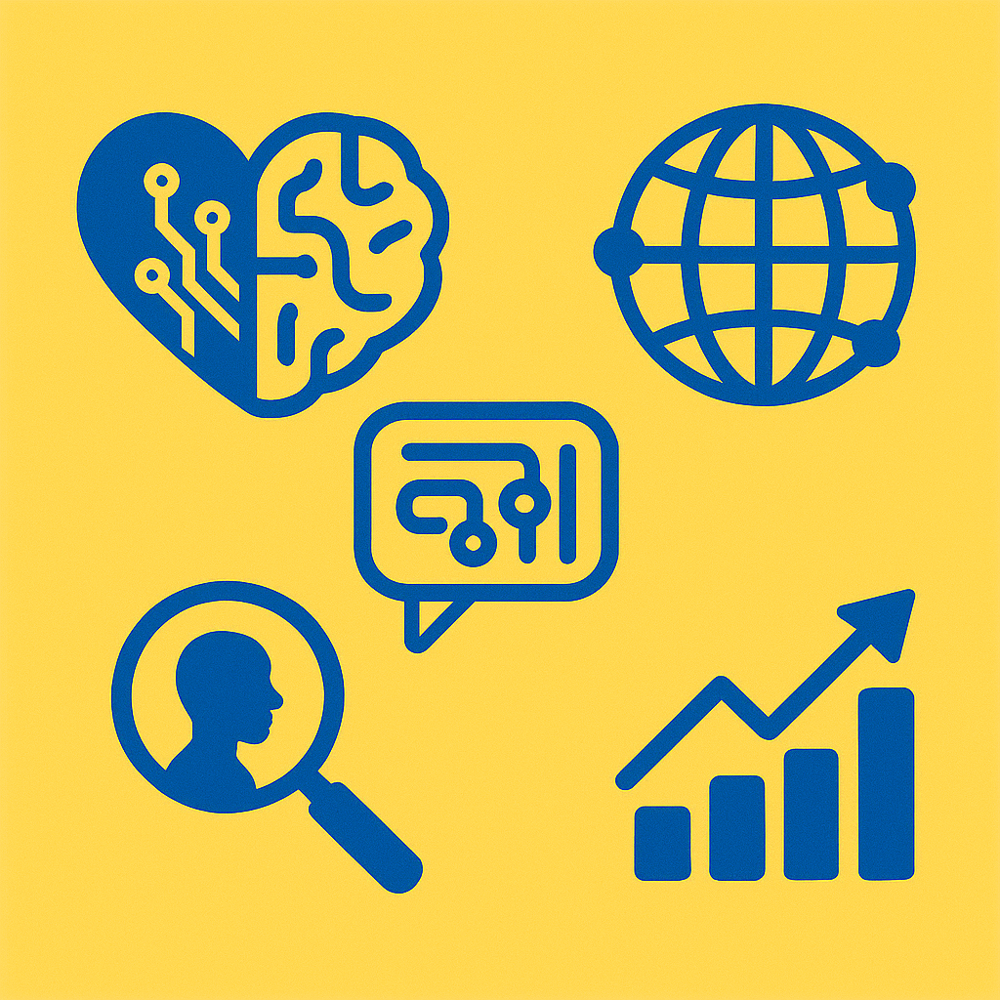

Building a Global Mental Health Platform
Proven Approach
We build on evidence-based lay therapy models that have been validated through decades of research and real-world implementation.
Community-Led
Our teams are embedded in the communities they serve, ensuring culturally-adapted solutions that respect local contexts and needs.
Research Platform

Unlike one-off implementations, we're creating a permanent research infrastructure for continuous innovation in global mental health.
Technology-Enhanced

We use technology to enhance—not replace—human connection, improving training, supervision, and outcomes measurement.